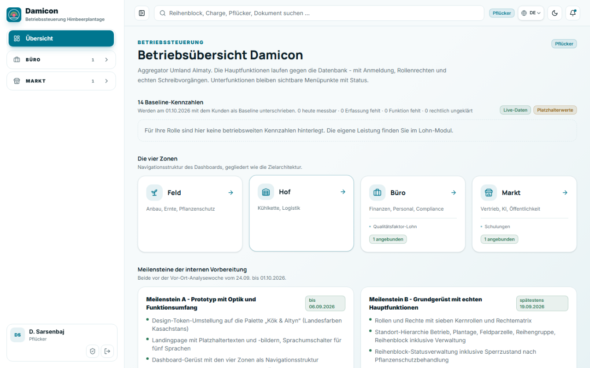
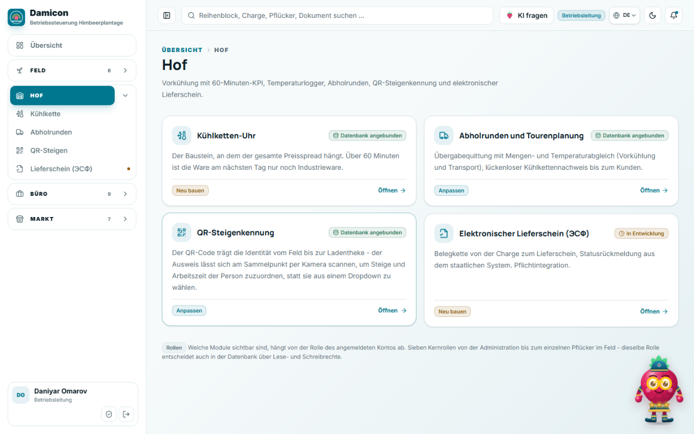
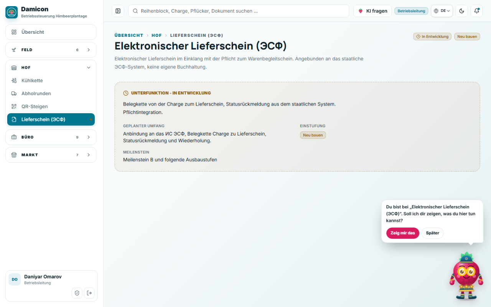

Sagen die Texte im Portal etwas über den Betrieb, oder sagen sie etwas über das Projekt, das das Portal baut?
Stand
21.09.2026
Branch
ui/karten-und-feinschliff, Basis main bda9cb7
Verfahren
Sprachkatalog vollständig gelesen, Fundstellen im Quelltext nachverfolgt, laufendes Portal in zwei Rollen bedient
Umfang
16 Befunde: 2 sehr hoch, 4 hoch, 5 mittel, 5 niedrig — davon 2 sachliche Fehler
Verfahren und Geltungsbereich
Anlass war die Frage, ob im Portal Texte stehen, die den Projekt- oder Entwicklungsfortschritt beschreiben statt den Betrieb. Geprüft wurde der Sprachkatalog vollständig und die laufende Anwendung im Browser, nicht der Quelltext allein.
Jede Fundstelle im Quelltext nachverfolgt, um gerenderten Text von totem Text zu trennen
Laufendes Portal unter localhost:3000 gegen die gehostete Supabase-Instanz bedient, angemeldet als Betriebsleitung und als Pflücker
Gegenprobe in en.json, ru.json und kk.json: jeder hier genannte Text steht in allen vier Sprachen
Belege als Bildschirmfotos aus dem laufenden Programm, nicht aus Entwürfen
Woran die Texte gemessen wurden
Ein Text im Portal ist dann am richtigen Platz, wenn er die Frage beantwortet, die an dieser Stelle ansteht. Auf einer Modulseite lautet sie: Was kann ich hier tun? An einer Kennzahl: Woher kommt diese Zahl und wie aktuell ist sie? An einem Formular: Was passiert, wenn ich speichere? Texte, die stattdessen den Bauzustand, die Begründung des Projekts oder die technische Umsetzung erklären, sind hier als Befund erfasst.
Nicht geprüft
Die öffentliche Website im Detail — dort sind Prototyp-Hinweise gewollt, siehe TX-16
Die Texte des KI-Assistenten im Gesprächsverlauf
Die PDF-Ausgabe der Prüfung
Rechtschreibung und Grammatik über den einen unter TX-15 genannten Fall hinaus
Die Sprachfassungen inhaltlich — nur geprüft, ob die beanstandeten Texte dort ebenfalls stehen
Überblick
Im Portal liegen zwei Textschichten übereinander. Die operative Schicht ist sachlich und am Betrieb ausgerichtet; sie bleibt und ist unter Abschnitt 6 beschrieben. Darüber liegt eine zweite Schicht, die den Bauzustand des Projekts beschreibt. Sie steht nicht am Rand, sondern auf der Startseite, auf jeder Bereichsseite und im Kopf jeder Modulseite, und sie ist für alle Rollen sichtbar.
2385
geprüfte Textbausteine im deutschen Katalog
236
übersetzte Zeichenketten der Projektschicht, 59 je Sprache
2
sachliche Fehler: Texte, die dem Funktionsstand widersprechen
übersetzte Zeichenketten ohne Fundstelle im Quelltext
4
Sprachen, in die jeder beanstandete Text übersetzt ist
Die Spalte Gewicht bewertet, was der Befund für den Benutzer bedeutet. Sehr hoch heißt, der Text steht prominent und ist für keine Rolle verwertbar. Hoch heißt, der Text führt in die Irre oder ist nachweislich falsch. Mittel und niedrig betreffen Ballast und Feinschliff.
ID
Befund
Ansicht
Wer sieht es
Gewicht
TX-01
Der Portalstart endet in einem Projektplan
Startseite
alle Rollen
sehr hoch
TX-02
Die Kennzahlen-Sektion erklärt den Bauzustand statt den Betrieb
Startseite
alle Rollen
sehr hoch
TX-03
„Übernehmen / Anpassen / Neu bauen“ auf jeder Modulkarte
Bereichs- und Modulseiten
alle Rollen
hoch
TX-04
Widerspruch zwischen Modulbeschreibung und Statuspille
ЭСФ, Integrationen
alle Rollen
hochFehler
TX-05
Drei Modulseiten widersprechen sich über die Wetteranbindung
Feld, Büro
alle Rollen
hochFehler
TX-06
Anforderungsnummern und eine Jira-Kennung im sichtbaren Text
fünf Stellen
alle Rollen
hoch
TX-07
Die Seiten der zwei unfertigen Module sind Projektsteckbriefe
ЭСФ, Integrationen
alle Rollen
mittel
TX-08
„Meilenstein B“ ist seit dem 19.09. überfällig
Startseite, Modulseiten
alle Rollen
mittel
TX-09
„Datenbank angebunden“ steht auf 24 von 26 Karten
Bereichs- und Modulseiten
alle Rollen
mittel
TX-10
Konzeptsätze als Modulbeschreibung
Bereichsseiten
alle Rollen
mittel
TX-11
Technik statt Sache in Hinweisen und Fehlermeldungen
mehrere Module
alle Rollen
mittel
TX-12
Beschreibung und „Geplanter Umfang“ sagen dasselbe
Büro, Markt
alle Rollen
niedrig
TX-13
Der Begleiter bietet Hilfe auf leeren Seiten an
Platzhalterseiten
alle Rollen
niedrig
TX-14
136 übersetzte Zeichenketten werden nie gerendert
Katalog
niemand
niedrig
TX-15
„Qualitaetssortierung“ ohne Umlaut
Startseite
Büro
niedrig
TX-16
Die öffentliche Seite meldet „0 als bedienbare Demo“
Landing, FAQ
Besucher
niedrig
1 Projektstatus im Portal
Sechs Befunde, die denselben Ursprung haben: Angaben aus Projektplanung und Migrationsanalyse sind in die Oberfläche gewandert und dort geblieben. Sie beantworten keine Frage, die im Betrieb ansteht.

Startseite als Pflücker, 1280 px. Die Überschrift nennt 14 Kennzahlen, darunter steht keine einzige. Zwei der vier Zonenkarten sind leer. Darunter beginnt der Projektplan.
TX-01Der Portalstart endet in einem Projektplan
Was dort steht
Unter den Kennzahlen und den vier Zonen folgt auf /dashboard ein Abschnitt „Meilensteine der internen Vorbereitung“ mit zwei Karten.
Meilenstein A, grüne Pille „bis 06.09.2026“, listet unter anderem „Design-Token-Umstellung auf die Palette ‚Kök & Altyn‘“ und „Landingpage mit Platzhaltertexten und -bildern“.
Meilenstein B, Pille „spätestens 19.09.2026“, listet sieben Arbeitspakete.
Schlusssatz: „Alle Hauptfunktionen sind an die Datenbank angebunden: Anmeldung, Rollenrechte über Row Level Security, …“
Wer es sieht
Alle Rollen. Der Abschnitt ist an keine Berechtigung gebunden.
Ein Pflücker bekommt ihn auf dem Telefon genauso wie die Administration.
Warum es stört
„Row Level Security“ und „Design-Token“ sind keine Begriffe aus dem Himbeeranbau.
Der Fortschritt eines Softwareprojekts ist keine Information, mit der sich eine Schicht planen lässt.
„Landingpage mit Platzhaltertexten und -bildern“ sagt dem Kunden im eigenen Produkt, dass die Website mit Platzhaltern gefüllt ist.
„Meilensteine der internen Vorbereitung“ macht den Leser zum Außenstehenden eines Projekts, das er bezahlt.
Fundstelle: src/components/dashboard/home.tsx:311-354, Texte in src/messages/de.json:339-360.
Lösungsansatz:
Abschnitt aus dem Portal entfernen.
Entweder in einen Bereich verschieben, den nur admin sieht, oder auf die öffentliche Seite, wo die Prototyp-Sprache ohnehin steht.
Ersparnis: 18 Textbausteine je Sprache, 72 insgesamt.
TX-02Die Kennzahlen-Sektion erklärt den Bauzustand statt den Betrieb
Was dort steht
Überschrift „14 Baseline-Kennzahlen“, darunter „Werden am 01.10.2026 mit dem Kunden als Baseline unterschrieben.“
Zählzeile für die Betriebsleitung: „8 aus echten Daten gerechnet · 6 warten auf die Funktion dahinter“.
Zählzeile für den Pflücker: „0 heute messbar · 0 Erfassung fehlt · 0 Funktion fehlt · 0 rechtlich ungeklärt“, gefolgt von der Überschrift „14 Baseline-Kennzahlen“ ohne eine einzige Kachel darunter.
Rechts zwei Pillen nebeneinander: „Live-Daten“ und „Platzhalterwerte“.
Am Fuß jeder Kachel ein Bauzustand statt eines Datenstands: „Funktion fehlt“, „Erfassung fehlt“, „heute messbar“.
Im Kurzhinweis jeder Kachel steht, was dafür noch gebaut werden muss (kpis.*.braucht).
Warum es stört
Der Leser ist der Kunde. Das Portal spricht über ihn in der dritten Person.
„Platzhalterwerte“ ist fest verdrahtet und erscheint auch dann, wenn acht Kennzahlen aus echten Datensätzen gerechnet sind. Die beiden Pillen widersprechen sich.
Beim Pflücker verspricht die Überschrift 14 Kennzahlen und liefert keine.
Der Kurzhinweis ist Aufgabenliste an der Stelle, an der ein Nutzer fragt: Ist diese Zahl von heute?
Fundstelle: src/components/dashboard/home.tsx:166-199, feste Pille in home.tsx:186, Texte in src/messages/de.json:329-331, 361-364, 1995-1998.
Lösungsansatz:
Fußzeile der Kacheln umstellen: nicht „Funktion fehlt“, sondern „noch keine Daten“ oder ein Datenstand wie „Stand: heute, 14:20“.
Die Pille „Platzhalterwerte“ an den Einzelwert koppeln statt an die Sektion.
Die Zählzeile über den Bauzustand streichen.

Bereichsseite Hof, 1280 px. Oben rechts der Reifegrad, unten links die Einstufung aus der Migrationsanalyse, gegenüber der einzige echte Verweis der Karte.
TX-03„Übernehmen / Anpassen / Neu bauen“ auf jeder Modulkarte
Was dort steht
Jede Modulkarte auf einer Bereichsseite und jeder Modulseitenkopf trägt eine Pille mit einem dieser drei Wörter.
Verteilung über die 26 Module: 13-mal „Anpassen“, 9-mal „Neu bauen“, 4-mal „Übernehmen“.
Warum es stört
Die Wörter stammen aus der Migrationsanalyse und beantworten, ob eine Funktion vom Altsystem übernommen, angepasst oder neu gebaut werden sollte. Für den Betrieb ist das folgenlos.
Auf der Bereichsseite steht die Pille unten links, direkt gegenüber dem Verweis „Öffnen →“. Zwei Verben nebeneinander, eines davon ausführbar.
„Neu bauen“ und „Anpassen“ lesen sich dort als Schaltflächen. Wer darauf klickt, landet im Modul, weil die ganze Karte ein Verweis ist, und wird den Zusammenhang nicht verstehen.
Fundstelle: src/components/dashboard/module-meta.tsx:15-18, Texte in src/messages/de.json:397-399.
Lösungsansatz: Pille ersatzlos entfernen. Die Einstufung gehört in die Projektunterlagen, nicht auf die Karte.

Modulseite ЭСФ, 1280 px. Drei Aussagen auf einem Bildschirm: angebunden, in Entwicklung, Anbindung geplant. Unten rechts fragt der Begleiter, was man hier tun kann.
TX-07Die Seiten der zwei unfertigen Module sind Projektsteckbriefe
Was dort steht
Wer /dashboard/hof/lieferschein-esf oder /dashboard/buero/integrationen öffnet, bekommt eine Karte mit der Überschrift „Unterfunktion – in Entwicklung“.
Darunter drei Felder: „Geplanter Umfang“, „Einstufung“, „Meilenstein“.
Warum es stört
„Unterfunktion“ ist ein Begriff aus der Projektgliederung. Für den Nutzer ist es ein Menüpunkt wie jeder andere, und er wurde nicht als untergeordnet angekündigt.
„Einstufung“ wiederholt nur die Pille aus TX-03.
„Meilenstein“ trägt auf beiden Seiten denselben fest verdrahteten Text und hängt an keinem Modul.
Fundstelle: src/components/dashboard/module-meta.tsx:43-93, Texte in src/messages/de.json:407-411.
Lösungsansatz: Karte auf einen Satz reduzieren — was das Modul können wird und dass es noch nicht verfügbar ist. Die drei Felder entfallen.
TX-08„Meilenstein B“ ist seit dem 19.09. überfällig
Was dort steht
Auf beiden Platzhalterseiten unter „Meilenstein“: „Meilenstein B und folgende Ausbaustufen“.
Auf der Startseite das Fälligkeitsdatum dieses Meilensteins: „spätestens 19.09.2026“, in grüner Pille, als sei er erreicht.
Warum es stört
Stand dieses Berichts ist der 21.09.2026. Das Portal verspricht zwei Funktionen für einen Termin, der zwei Tage zurückliegt.
Jedes datumsgebundene Versprechen in der Oberfläche altert so, und niemand wird es pflegen.
Fundstelle: src/messages/de.json:411 und :350.
Lösungsansatz: Datumsangaben aus der Oberfläche nehmen, nicht aktualisieren. Ein Datum in einem Katalog, den vier Sprachen tragen, wird nie nachgezogen.
TX-09„Datenbank angebunden“ steht auf 24 von 26 Karten
Verteilung der drei Werte
„angebunden“: 24 Module
„in-entwicklung“: 2 Module
„demo“: kommt in src/lib/modules.ts überhaupt nicht mehr vor
Warum es stört
Eine Pille, die auf 92 Prozent der Karten dasselbe sagt, ist Dekoration. Sie kostet auf jeder Karte Platz und lenkt den Blick vom Modulnamen weg.
Dasselbe gilt für die Zählpillen auf den Zonenkarten der Startseite („6 angebunden“, „3 angebunden“). Sie zählen fast immer die Module der Zone, die darüber schon einzeln aufgelistet sind.
Der Wert „Demo bedienbar“ ist in vier Sprachen übersetzt und wird nie angezeigt. Ebenso der Text „{count} Demo“ auf der Startseite.
Fundstelle: src/components/dashboard/module-meta.tsx:20-39, Texte in src/messages/de.json:402-404, toter Text in :403 und :336.
Lösungsansatz:
Pille nur an den zwei nicht verfügbaren Modulen zeigen, sonst weglassen.
Den Wert demo aus Typ und Katalog entfernen. Er hängt mit TX-16 zusammen.
2 Widersprüche zum tatsächlichen Stand
Diese beiden Befunde sind keine Geschmacksfrage. Vier Texte behaupten etwas, das nachweislich nicht zutrifft. Sie sollten unabhängig von allen anderen Punkten korrigiert werden.
TX-04Widerspruch zwischen Modulbeschreibung und Statuspille
Was dort steht
Modulseite „Elektronischer Lieferschein (ЭСФ)“: Beschreibung „Angebunden an das staatliche ЭСФ-System, keine eigene Buchhaltung“, daneben die Pille „In Entwicklung“, darunter als geplanter Umfang „Anbindung an das ИС ЭСФ“.
Modulseite „Staatliche Integrationen“: „Konnektoren zu ЭСФ, virtuellem Lagerbestand, ЕСУТД und den Förderportalen gosagro.kz und qoldau.kz“ im Präsens, daneben „In Entwicklung“.
Warum es stört
Drei Aussagen auf einem Bildschirm: angebunden, in Entwicklung, Anbindung geplant.
Das sind die beiden einzigen Module mit der Pille „In Entwicklung“. Beide widersprechen ihrer eigenen Beschreibung.
Bei einer Pflichtintegration gegenüber einer Behörde ist die Aussage „angebunden“ nicht folgenlos.
Fundstelle: src/messages/de.json:622 und :671, Pillen aus src/lib/modules.ts:162-176.
Lösungsansatz: Beide Beschreibungen in eine Absichtsform setzen, solange die Anbindung nicht steht. Zwei Sätze, keine strukturelle Änderung.
TX-05Drei Modulseiten widersprechen sich über die Wetteranbindung
Der tatsächliche Stand
Das Wetter-Modul ist angebunden (src/lib/modules.ts:107).
Es zeigt eine Temperatursumme über 5 °C Basistemperatur und holt die Daten von Open-Meteo.
Im laufenden Programm unter /de/dashboard/feld/wetter nachgeprüft.
Was das Portal trotzdem behauptet
Am Fuß des Rotationsplans: „die Wetteranbindung (Temperatursummenrechnung) ist selbst noch nicht gebaut“. Falsch, wird live gerendert.
Am Fuß des Pflückerstamms: „die Wetteranbindung (Anforderung 2.13) ist zurückgestellt“. Falsch, wird live gerendert.
Im Kopf der Wetterseite: „Bewusst kein maschinelles Lernen in Phase 1 – eine erklärbare Heuristik reicht.“ Eine Entwurfsentscheidung, an einen Gutachter gerichtet.
Im Pflanzenschutzprotokoll, gleiche Kategorie: „Der Protokoll-Upload ist noch nicht gebaut: die Spalte für das Protokolldokument bleibt vorerst leer.“
Die zwei falschen Wetter-Hinweise streichen oder auf das beziehen, was tatsächlich fehlt: die Auswertung der Temperatursumme im Rotationsplan.
„Phase 1“ und „bewusst kein maschinelles Lernen“ aus dem Seitenkopf nehmen.
Der Fall zeigt das Grundproblem: Statusaussagen im Sprachkatalog veralten, weil sie nicht an der Stelle stehen, an der die Funktion gebaut wird.
3 Interne Referenzen in der Oberfläche
TX-06Anforderungsnummern und eine Jira-Kennung im sichtbaren Text
Die Jira-Kennung
Kurzhinweis der Kennzahl „Abdeckung der Saisonkräfte in ЕСУТД“: „rechtliche Bestätigung der ЕСУТД-Pflicht über enbek.kz (siehe WMCNL-1447) – Anbindungspunkt benannt, Rechtsprüfung der Pflicht selbst steht noch aus“.
Die Kennung steht so auch in en.json, ru.json und kk.json.
Ein Nutzer in Almaty kann dieses Ticket nicht öffnen.
Sicherheitsseite: „ist Pflicht für Anforderung 4.9, ihre Durchsetzung je Rolle ist ein späterer Ausbauschritt“
Fördermittel: „Fristenmonitor und Nachweisdokumente je Dossier sind angebunden (Anforderung 4.12)“
Pflückerstamm: „die Wetteranbindung (Anforderung 2.13) ist zurückgestellt“
Anforderungsnummer, derzeit nicht sichtbar
Abholrunden: „Tourenliste je Fahrzeug und Zeitfenster (Anforderung 3.5 Teil 1) fehlen noch“ — steht in modules.logistik.todo und wird nicht gerendert, siehe TX-14.
Warum es stört
Die Nummern sind ohne das Analysedokument bedeutungslos.
Wer das Dokument hat, braucht sie nicht in der Oberfläche.
Eine Ticket-Kennung im Produkt verrät zudem die interne Arbeitsteilung an jeden, der das Portal sieht.
Lösungsansatz: Ersatzlos streichen. Die Aussage dahinter bleibt jeweils verständlich, wenn man die Klammer entfernt.
4 Sprache der Oberfläche
Zwei Befunde, bei denen die Texte inhaltlich stimmen, aber aus der falschen Richtung geschrieben sind: aus der Sicht dessen, der das System gebaut hat, statt aus der Sicht dessen, der damit arbeitet.
TX-10Konzeptsätze als Modulbeschreibung
Wo der Text erscheint
Der summary-Text eines Moduls steht auf der Bereichsseite als Kartentext, also dort, wo ein Nutzer liest, was ihn hinter dem Verweis erwartet.
Was dort stattdessen steht
Kühlkette: „Der Baustein, an dem der gesamte Preisspread hängt.“
Rotationsplan: „Die erste Funktion, die gebaut wird. Das Planungsproblem ist nicht die Prognose, sondern die Rotation über sechs Wochen.“
Reihenblöcke: „Zustandsautomat je Reihenblock.“
Rollen und Rechte: „Rollen als klare Datenstruktur über Ressourcen mal Aktionen. Neue Rollen ohne Eingriff in die Logik.“
Dieselbe Herkunft, am Fuß der Modulseiten
„Der wartezeitgesperrte Block ist der am einfachsten prüfbare Nutzen des Systems“ (:764, gerendert in reihenbloecke-ansicht.tsx:223)
„Die Feldkarte … ist die Basis für Rotationsplan, Ernteerfassung und Deckungsbeitrag“ (:1098, gerendert in standort-ansicht.tsx:158)
Warum es stört
„Baustein“, „die erste Funktion, die gebaut wird“ und „Datenstruktur“ beschreiben die Software, nicht die Arbeit.
„Zustandsautomat“ ist ein Begriff aus der Informatik.
Die Sätze stammen erkennbar aus dem Pitch und dem Analysedokument, wo sie am richtigen Platz waren. Sie erklären den Wert des Systems, nicht die Ansicht vor dem Leser.
Fundstelle: src/messages/de.json:567, 588, 602, 630, dazu :764 und :1098.
Lösungsansatz: Etwa zwölf Stellen einzeln durchgehen, jeweils mit der Frage: Beantwortet der Satz, was ich auf dieser Seite tun kann? Wenn nicht, gehört er ins Handbuch.
TX-11Technik statt Sache in Hinweisen und Fehlermeldungen
Die Fehlermeldung mit dem größten Schaden
„Vorgang fehlgeschlagen. Details stehen im Server-Log.“ (:893)
Der Nutzer hat keinen Zugang zum Server-Log. Der Satz sagt ihm nur, dass die Auskunft woanders liegt.
Weitere Stellen, an denen die Umsetzung statt der Sache erklärt wird
„Angebunden an die Supabase-Datenbank, gelesen unter den RLS-Rechten Ihrer Rolle.“ (:318)
„Die Sperre wird von einem Datenbank-Trigger gesetzt und lässt sich nicht per Statuswechsel umgehen.“ (:1071)
„Buchungen sind unveränderlich; die Datenbank verweigert UPDATE und DELETE auf dem Finanzjournal unabhängig von der Oberfläche.“ (:1177)
„alle serverseitig als SVG erzeugt und über die Browser-Druckfunktion druckfertig“ (:615)
Einordnung
Die Absicht ist gut. Diese Sätze sollen zeigen, dass eine Regel hart ist und nicht nur in der Maske sitzt.
Das lässt sich ohne Produktnamen und SQL-Schlüsselwörter sagen.
Das Vorbild steht zwei Zeilen weiter oben im selben Modul: „Eine gebuchte Zeile lässt sich nicht mehr ändern, nur durch eine Gegenbuchung korrigieren.“
Lösungsansatz: Die sechs Sätze umschreiben, die Aussage behalten. Bei :893 zusätzlich eine Handlungsanweisung ergänzen, etwa den Hinweis auf einen erneuten Versuch.
5 Toter und doppelter Text
TX-14136 übersetzte Zeichenketten werden nie gerendert
Namensräume ohne Fundstelle im Quelltext
personalDemo: 16 Bausteine
pflanzenschutzDemo: 13 Bausteine
qrSteigenMock: 4 Bausteine
pflueckaufgabenDemo.addProof mit dem Text „Beleg aufnehmen (Mock)“ (:774): 1 Baustein
Rechnung
34 Bausteine je Sprache, also 136 übersetzte Zeichenketten, die niemand sieht.
Dazu kommt
24 der 26 modules.*.todo-Texte. Gerendert werden nur die der beiden Platzhaltermodule.
Wer künftig ein Modul auf „in Entwicklung“ setzt, bekommt einen Text angezeigt, den seit Monaten niemand gegengelesen hat.
Lösungsansatz:
Die drei toten Namensräume aus allen vier Katalogen löschen.
Für todo entscheiden, ob das Feld bleibt; wenn ja, die 24 ungenutzten Texte einmal gegenlesen.
TX-12Beschreibung und „Geplanter Umfang“ sagen dasselbe
Die Dubletten
Dokumente: beschrieben als „verknüpft mit Reihenblock und Charge“, offen laut todo: „Verknüpfung mit Reihenblock und Charge“
Preislisten: beschrieben als „Versionierte Preislisten mit Staffelpreisen je Kundengruppe und Gültigkeitszeitraum“, offen: „Versionierte Preislisten, Staffelpreise, Gültigkeitszeiträume, Kundenzuordnung“
Aggregator: summary und todo unterscheiden sich in zwei Wörtern
Einordnung
Sichtbar wird das derzeit nicht, weil todo nur auf den zwei Platzhalterseiten gerendert wird.
Es zeigt aber, dass die drei Textfelder je Modul (description, summary, todo) nicht mehr auseinandergehalten werden.
Lösungsansatz: Zusammen mit TX-14 lösen — todo entweder streichen oder auf die zwei Module begrenzen, die es brauchen.
TX-13Der Begleiter bietet Hilfe auf leeren Seiten an
Was passiert
DamiAI fragt beim Öffnen eines Moduls: „Du bist bei ‚{bereich}‘. Soll ich dir zeigen, was du hier tun kannst?“
Auf /dashboard/hof/lieferschein-esf erscheint diese Frage über einer Seite, auf der man nichts tun kann.
Im Bildschirmfoto zu TX-07 stehen beide gleichzeitig im Bild.
Fundstelle: src/messages/de.json:1634.
Lösungsansatz: Die Frage an den Modulstatus koppeln und auf Platzhalterseiten unterdrücken.
TX-15„Qualitaetssortierung“ ohne Umlaut
Was dort steht
Kurzhinweis der Kennzahl „Anteil vermarktungsfähiger Schalen“: „Qualitaetssortierung je Schale“.
Einordnung
Einziger Fall dieser Art im deutschen Katalog.
npm run test:umlaute greift ihn nicht ab.
Fundstelle: src/messages/de.json:497.
Lösungsansatz: Wort korrigieren, Prüfung im Umlaut-Test ergänzen.
TX-16Die öffentliche Seite meldet „0 als bedienbare Demo“
Was dort steht
Die FAQ-Antwort auf „Was ist heute schon gebaut?“ wird aus der Modulliste gerechnet.
Sie lautet derzeit: „26 Module in vier Bereichen: 24 an der Datenbank mit echten Schreibvorgängen, 0 als bedienbare Demo, 2 als sichtbare Menüpunkte in Entwicklung.“
Warum es stört
Die Null im Fließtext ist die Folge davon, dass der Reifegrad „demo“ nicht mehr vergeben wird, siehe TX-09.
Der Kommentar über der Funktion zeigt, dass diese Zahlen schon einmal auseinandergelaufen sind und deshalb berechnet statt geschrieben werden. Die Rechnung deckt aber den Fall nicht ab, dass ein Wert gar nicht mehr vorkommt.
Was auf der öffentlichen Seite richtig ist und bleiben soll
„Interner Proof-of-Concept. Kein vertraglich zugesicherter Leistungsumfang“ im Seitenfuß
Der Hinweis auf Platzhalterbilder
Der Haftungsvorbehalt in legal.prototypeDisclaimer
Begründung: Das ist ein Vorbehalt gegenüber einem Besucher und gehört dorthin. Im Portal, hinter der Anmeldung, arbeitet dagegen jemand.
Fundstelle: src/components/site/fragen.tsx:19-26, Text in src/messages/de.json:218.
Lösungsansatz: Zählwerte mit 0 in der Antwort auslassen.
6 Was trägt
Der größere Teil des Katalogs ist sachlich und am Betrieb ausgerichtet. Diese Texte sind ausdrücklich nicht Gegenstand der Befunde oben und sollten unverändert bleiben.
Fehlermeldungen
Die Einträge unter aktionen.fehler.* nennen Ursache und nächsten Schritt in der Sprache des Betriebs.
„Reihenblock {wert} ist wartezeitgesperrt – keine Pflückaufgabe möglich“
„Die Prüfziffer stimmt nicht. Meist steckt ein Zahlendreher in der Nummer“
„Wer eine Steige erfasst hat, kontrolliert sie nicht selbst. Eine andere Person muss diese Steige prüfen“
„Die Geräteuhr weicht zu stark von der Serverzeit ab (Zukunft oder mehr als 24 Stunden Differenz)“
Bis auf die zwei unter TX-11 genannten Ausnahmen durchgehend gut
Rechtliche Hinweise
Sie grenzen sorgfältig ab, statt Sicherheit zu behaupten. In einem System, das Nachweise führt, ist das der richtige Ton.
Näherungsvorbehalt bei ОПВ, ВОСМС und ИПН im Lohn-Modul, einschließlich des Hinweises, dass der Standardabzug einen schriftlichen Antrag voraussetzt
Abgrenzung der beiden Qualitätsfaktoren: der gerechnete aus der Ausschussquote und der von der Betriebsleitung gepflegte
Hinweis, dass die Anmeldung zum horizontalen Monitoring ein eigener Antrag bei der Steuerbehörde ist und keine Folge der Datenlage
Vorbehalt zu Koordinaten und Basistemperatur im Wetter-Modul, mit der Bitte um Bestätigung durch eine Agronomin oder einen Agronomen
Weitere Stärken
Formularhilfen, Spaltenköpfe und Statuswerte sind knapp und eindeutig
Die Rollentrennung im Text ist sauber gelöst: im Demo-Betrieb „Demo-Rolle wechseln“, im angemeldeten Betrieb „Ansicht als Rolle – ändert nur die Darstellung, die Schreibrechte richten sich weiter nach Ihrem Profil“
Die Demo-Zugänge auf der Anmeldeseite sind über NODE_ENV und ein ausdrückliches Flag abgesichert (src/app/[locale]/login/page.tsx:23-28)
7 Vorgeschlagene Reihenfolge
Das Grundproblem
Die Trennlinie liegt nicht zwischen guten und schlechten Texten, sondern zwischen zwei Lesern. Der eine entscheidet über das Projekt und will wissen, was gebaut ist. Der andere arbeitet mit dem Ergebnis und will wissen, was heute zu tun ist. Zurzeit bekommen beide denselben Text.
Schritt
Befunde
Warum in dieser Reihenfolge
1
TX-04, TX-05
Sachliche Fehler. Vier Texte widersprechen dem Funktionsstand, zwei davon bei einer Pflichtintegration gegenüber einer Behörde. Unabhängig von jeder Textdiskussion zu korrigieren.
2
TX-01, TX-06, TX-08
Ersatzloses Streichen: Meilenstein-Abschnitt, Anforderungsnummern, Jira-Kennung, Datumsangaben. Kein Ersatztext nötig, kein Abstimmungsbedarf, sofort wirksam.
3
TX-03, TX-07, TX-09
Meta-Angaben je Modul von drei Pillen auf eine reduzieren. Räumt Bereichsseiten und Modulköpfe zugleich auf und hängt an derselben Komponente.
4
TX-02, TX-10, TX-11
Umschreiben. Jede Stelle braucht eine eigene Entscheidung, deshalb nach den Streichungen: was dann noch stört, ist überschaubar.
5
TX-12, TX-13, TX-14, TX-15, TX-16
Aufräumen. Toter Text, Umlaut, Null im FAQ, Begleiter auf Platzhalterseiten. Kein Nutzer wartet darauf, aber es hält den Katalog sauber.
Was die Änderungen nicht berühren dürfen
Alle Ansätze oben ändern Text und lassen Verhalten unverändert. Unberührt bleiben: Routen und Verweisziele, die Rechteprüfung über hasPermission, die Zählung der Module je Zone, die Datenabfragen und die Schreibvorgänge. Wo ein Ansatz das nicht einhält, steht es beim Befund: TX-09 entfernt einen Wert aus dem Typ Reifegrad und berührt damit src/lib/modules.ts und src/components/site/fragen.tsx.
Nebeneffekt
Bei jeder Streichung fällt dreifach Übersetzungsarbeit weg.
Die 236 Zeichenketten der Projektschicht sind vollständig ins Englische, Russische und Kasachische übersetzt, einschließlich der Jira-Kennung und der Palette „Kök & Altyn“.